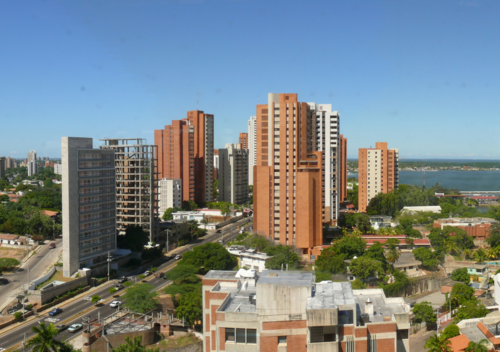

Maracaibo é uma cidade venezuelana capital do estado de Zulia e do município de Maracaibo. A população da cidade é de aproximadamente 1.495.200 habitantes,[1] com uma área metropolitana estimada em 2.108.404 de pessoas em 2010.[2] Maracaibo, conhecida como "A terra do sol amada", é a segunda maior cidade da Venezuela. Situa-se à margem ocidental do Lago de Maracaibo.
Maracaibo também é uma das cidades mais quentes do país. Mantinha uma temperatura média de 29 °C até uns 10 anos, porém com o incremento da contaminação, atualmente, no verão, a temperatura alcança facilmente os 39 °C, desde então 35 °C/37 °C é a temperatura mais comum. Os zulianos, são muito conhecidos pelo seu grande senso de humor e sua música "la Gaita", que tradicionalmente se escuta na época do natal.
